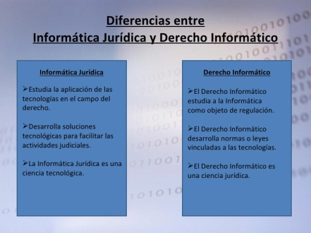

Informatica Jurídica
Definición
La Informática jurídica consiste en una ciencia que forma parte de la Informática, y se aplica sobre el Derecho; de manera que, se dé el tratamiento lógico y Automático de la información legal.
Es una ciencia que estudia la utilización de los recursos informáticos (Hardware y Software) para la mejora de los procesos, análisis, investigación y gestión en el ámbito jurídico.
No es una rama del derecho. Su temática es fundamentalmente tecnológica y carece de contenido jurídico.
La informática jurídica consiste en el uso de software y hardware informático como instrumentos del derecho, y nace cuando las computadoras evolucionan de ser máquinas que sólo facilitan el procesamiento de números a ser máquinas que posibilitan el almacenamiento y manipulación de textos.
Derecho informático
Definición
El Derecho Informático es la rama del Derecho que regula los efectos jurídicos derivados de la informática y de las Tecnologías de Información y Comunicación (TIC).
Se especializa, además, en el estudio de las transformaciones del derecho como consecuencia del uso generalizado de las actividades tecnológicas.
La informática se caracteriza por ser un ámbito muy cambiante, por este motivo, esta ciencia jurídica analiza las modificaciones de la informática y/o las TICs respecto a la sociedad, con la finalidad de crear principios y normativas que logren regularla adecuadamente.
El primer concepto de Derecho Informático fue acuñado en la Universidad de Regensburg de Alemania, por el profesor Dr. Wilhelm Steinmüller en los 70s. Sin embargo, no se trató de un concepto con una única interpretación.
Steinmüller analizó el concepto junto con otros términos como el Derecho Telemático, Derecho de las Nuevas Tecnologías, Derecho de la Sociedad de la Información, entre otros.
Diferencia entre Informática Jurídica y Derecho Informático
Clasificación de la informática jurídica
Informática Jurídica Documental.
Consiste en la creación, almacenamiento y recuperación de información jurídica como leyes, doctrina, jurisprudencia, documentos administrativos, contratos, convenios, expedientes judiciales, notariales y registrales.
Existen 3 métodos de búsqueda de información documental:
Full-Text: el criterio de búsqueda es aplicado a todo el texto.
Keywords: el criterio de búsqueda es aplicado a un conjunto de palabras claves que se almacenan con el texto.
Abtract: el criterio de búsqueda es aplicado sobre el resumen del texto.
Informática jurídica de gestión y control:
Se compone de programas a través de los cuales se asiste en la realización de actos y gestiones de tipo jurídicos, como contratos, certificaciones, mandatos judiciales. Fue en este sentido como nace la Informática jurídica de gestión y control, para posteriormente buscar el desarrollo de actividades jurídico adjetivas. De acuerdo al uso profesional que se le de, la informática de gestión y control puede subclasificarse en:
- Informática Registral: es la que la Administración Pública aplica para el tratamiento electrónico de información catalogada a su cargo. Es una clasificación que se posee características de la modalidad documental y la de gestión.
- Informática Parlamentaria: se aplica al campo de la organización y funcionamiento de las cámaras parlamentarias, en tareas como información legislativa, diario de debates, bibliografía, hemerografía, control de gestión de proyectos, control de legislación a partir de su relación para determinar derogaciones, publicidad de los actos de gobierno, entre otros.
- Informática de Gestión de Estudios Jurídicos: administra la gestión del estudio jurídico, agilizando los procesos. Administra, entre otros aspectos, la agenda de plazos; los casos; la agenda de clientes; la facturación y cobranza; el procesamiento de textos; la consulta de legislación, doctrina y jurisprudencia; y la administración de recursos humanos.
- Informática Notarial: con características compartidas con la gestión de estudios jurídicos, pero orientado a la generación de documentos y la interacción con la informática Registral.
Informática Jurídica Decisoria o Meta documental
A través de la cual se ayuda o apoya en la toma de decisiones, a través de sistemas de inteligencia artificial que brinden soluciones a ciertas problemáticas jurídicas. Por ejemplo, mediante procesos de inteligencia artificial pueden redactarse documentos partiendo de pocas premisas, y corregirse errores ortográficos y gramaticales.
En un aspecto más avanzado, la inteligencia artificial, materializada a través de sistemas expertos que estructuran conocimientos especializados, obtienen conclusiones a partir de la información que se les suministra. Generalmente bajo la modalidad “pregunta-respuesta”, facilitando la toma de decisiones.
Importancia de la informática juridica
Actualmente, en todo tipo de Derecho se utiliza la tecnología, ya sea para escribir un contrato, realizar presentaciones, revisar expedientes, o para mandar importantes documentos a grandes distancias con mayor velocidad, y por supuesto, mejor presentación. La vida del jurista moderno es dinámica, los grandes cambios están presentes, la revolución tecnológica está aquí; el abogado se tiene que adaptar a cambios repentinos en la forma en que la sociedad se comunica y transfiere información. Es una ventaja de las actuales generaciones, tener acceso ilimitado a las tecnologías para aprender, retener y generar información.
La informática jurídica es importante para los estudiosos del derecho porque se encarga de estudiar el tratamiento automatizado de: las fuentes del conocimiento jurídico a través de los sistemas de documentación legislativa, jurisprudencial y doctrinal (informática jurídica documental); las fuentes de producción jurídica, a través de la elaboración informática de los factores lógico-formales que concurren en el proceso legislativo y en la decisión judicial (informática jurídica decisional); y los procesos de organización de la infraestructura o medios instrumentales con los que se gestiona el Derecho (informática jurídica de gestión).
Por lo que resulta importante señalar que el derecho informático constituye el conjunto de normas, aplicaciones, procesos, relaciones jurídicas que surgen como consecuencia de la aplicación y desarrollo de la informática. Es decir, que la informática en general desde este punto de vista es objeto regulado por el derecho.
Alcances de la informática en la criminalistica
La Informática Forense surge como una disciplina auxiliar de la justicia moderna, para contrarrestar los desafíos y técnicas de los delincuentes informáticos; garante de la verdad circundante de la evidencia de carácter digital, que es mucho más susceptible de sufrir alteración y/o modificaciones por la connotación que de acuerdo a la practicidad y cotidianidad se le asigna, pero que eventualmente se pudiese aportar como medio de prueba en un proceso judicial.
Dentro del proceso de investigación criminal, la Informática Forense permite realizar experticias específicas sobre: telefonía celular, sistemas de seguridad de circuito cerrado, equipos de computación, dispositivos de almacenamiento (discos duros, dispositivos flash, cd o diskettes), páginas web, correos electrónicos, entre otros.
Es importante realizar el reconocimiento técnico a cada evidencia, digital y/o física,el cual permite hacer una descripción detallada del material recibido, individualizando sus características físicas particulares, como marca, modelo, serial y otras que permitan particularizar la pieza en estudio.
Posteriormente, mediante la utilización de equipos y software específicos, se procede a evaluar cada una de las evidencias de carácter digital, lo que permite interpretar la data, códigos, instrucciones y realizar el vaciado de contenido de elementos de interés criminalístico que guarden relación con la perpetración de un hecho punible.
Glosario
Hardware
Hardware es una palabra inglesa que hace referencia a las partes físicas tangibles de un sistema informático, es decir, todo aquello que podemos tocar con las manos.
Dentro del hardware encontramos una gran variedad de componentes eléctricos, electrónicos, electromecánicos y mecánicos.
El hardware es el chasis del ordenador, los cables, los ventiladores, los periféricos y todos los componentes que se pueden encontrar en un dispositivo electrónico.
Software
Colección de instrucciones y datos que le dicen a un ordenador qué tiene que hacer. Son los programas del ordenador, ni más ni menos, incluyendo además aplicaciones web y móviles, y básicamente cualquier otra cosa que entre dentro de esta definición.
TICs
Las TIC son el conjunto de tecnologías desarrolladas en la actualidad para una información y comunicación más eficiente, las cuales han modificado tanto la forma de acceder al conocimiento como las relaciones humanas.
TIC es la abreviatura de Tecnologías de la Información y la Comunicación.
Full-Text
el criterio de búsqueda es aplicado a todo el texto.
Keywords
El criterio de búsqueda es aplicado a un conjunto de palabras claves que se almacenan con el texto.
Abtract
El criterio de búsqueda es aplicado sobre el resumen del texto.
Tareas
- Investigar la diferencia entre Informática Jurídica y Derecho Informático 07-10-2022
- Descarga de SQL Server Entrega: 12-Octubre 2022
- Tipos de datos en SQL 14-10-2022
- Manual SQL 19-10-2022
- Desarrollar temas a Exponer (deberán formar equipos de tres personas) 19-10-2022
- 1. Como primer paso se descarga el archivo SQL Server Developer y se ejecuta.
- 2. Al terminar la instalación pedirá un complemento descargable SSMS-Setup-ENU también se descarga y se ejecuta
- 1.- Desarrollo de sistemas
- 2.- Redes y comunicaciones
- 3.- Ciencias relacionadas directamente con la informática y la criminalistica
Trabajo en clase
- Clasificación de la informática jurídica 07-10-2022 Exposición
- Material de apoyo 07-10-2022 Exposición
- Cmder 12-10-2022
- SQL 14-10-2022
“Los hombres son como un programa de ordenador, siempre haremos lo que nos ordenen que hagamos, no lo que quieras que hagamos.”
Ing. Miranda